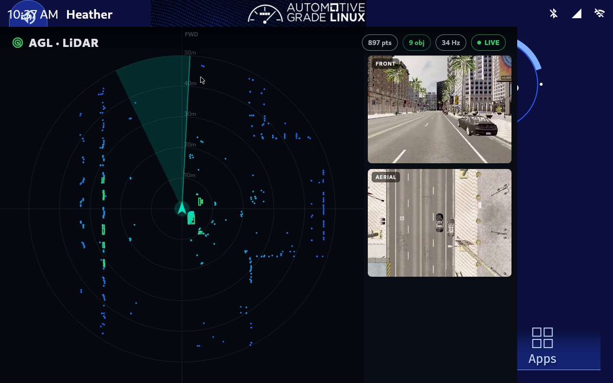

The demo pipeline is verified end to end inside a real AGL image. The work now splits two ways: bringing that same image up on the Jetson Orin Nano board, and drawing up how the dashboard should look next, cleaner and more functional.
TL;DR The LiDAR perception demo now boots inside a built AGL image, launches from its home-screen tile, and starts its own data backend with no manual steps. That verified pipeline is now being carried onto the Jetson Orin Nano target hardware, which is in progress and will be finished next. Alongside the hardware bring-up, this post shares early design drafts for the next version of the HMI: a clear object list, color-coded detection classes, live telemetry, and a layout that adapts from a portrait screen to a wide instrument cluster.
The last few weeks closed the loop from a laptop demo into a real system image. The recipe that packages the dashboard is now merged into AGL, so anyone can build the app straight into an image. Booted in the emulated AGL target, the result is the full experience: tap the tile, the dashboard opens, and the data side comes up on its own.
agl-ivi-demo-flutter image, not a side-loaded binary.This was verified on the emulated AGL target (qemux86-64). The next job is to prove the same image on real silicon.
Here is the current app, the build that is now packaged into the image. The LiDAR plan view sits on the left with the perception boxes drawn over the point cloud, and the forward and aerial camera feeds sit on the right. The chips along the top read the point count, the object count, the update rate, and the live link status.

The emulator proves the software. The target proves the product. The same image is now being brought up on the Jetson Orin Nano Super, the board this project targets. Two things change for the better on real hardware: the GPU renders the Flutter compositor natively, and the display is a true portrait panel, so the dashboard stands upright instead of being rotated to fit a desktop window.
What is being checked on the device right now:
This stage is in progress. The image and board bring-up are underway, and the on-device run will be completed next.
With the pipeline proven, the question shifts from "does it work" to "does it read at a glance." These are early design drafts, not the shipped app yet. They push the dashboard toward something a driver could actually use: a readable object list, a consistent color system for object classes, live telemetry, and a layout that adapts between a portrait screen and a wide cluster.
The second draft pulls out the pieces that make it more functional, the parts a plain point cloud cannot tell you: what each object is, how sure the detector is, and how close it is.
The direction is simple: keep the exact same data the pipeline already carries, and spend the effort on making it legible. Nothing here needs a new sensor or a new transport, only a better front end over the stream that already works.
Status: the demo is verified inside a built AGL image and is being brought onto the Jetson Orin Nano. The design direction for the next HMI is drafted.